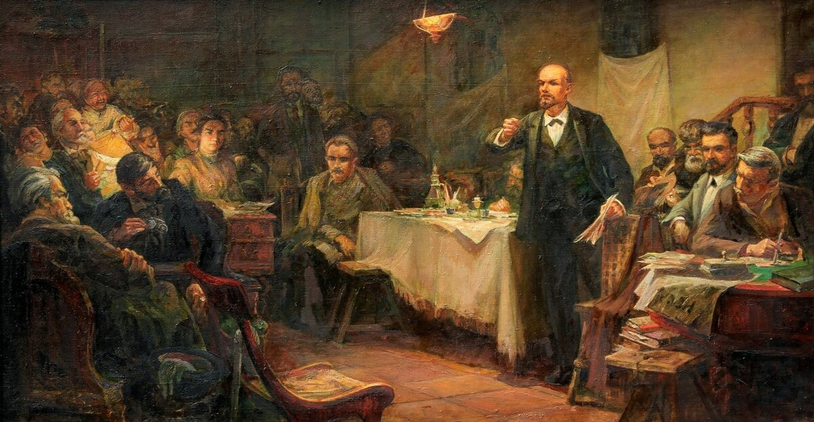

Коммунистическая партия советского союза
Главная
История
Руководители
Символы
Регистрация
I съезд РСДРП

II съезд РСДРП
XII съезд РСДРП
Конституция 1936 года
Победа в Великой Отечественной Войне
XX съезд КПСС
Первый полет человека в космос
Конституция СССР 1977
летние Олимпийские игры в Москве 1980